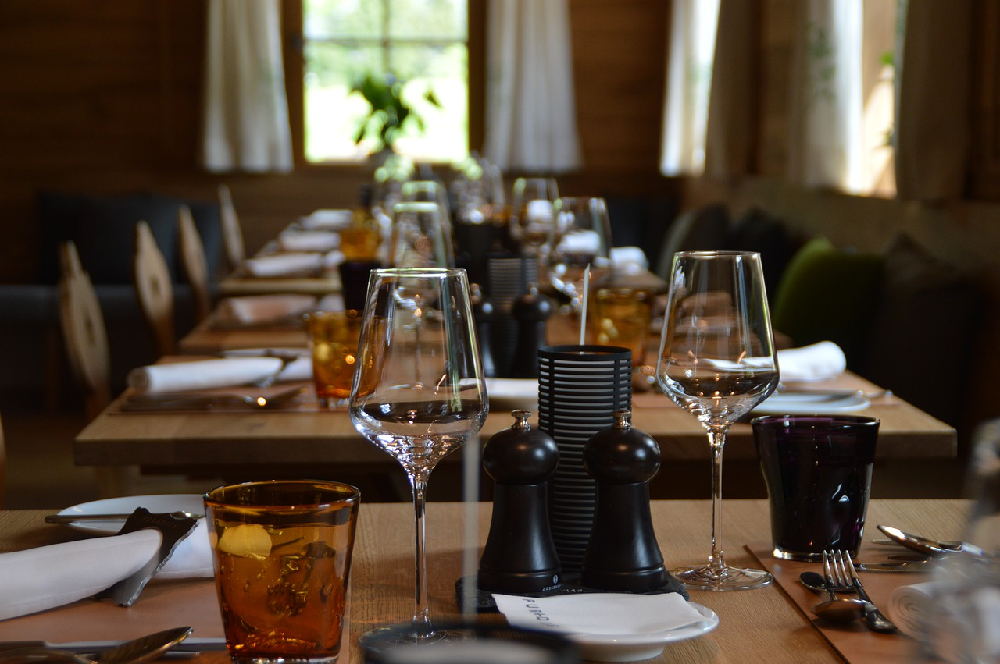
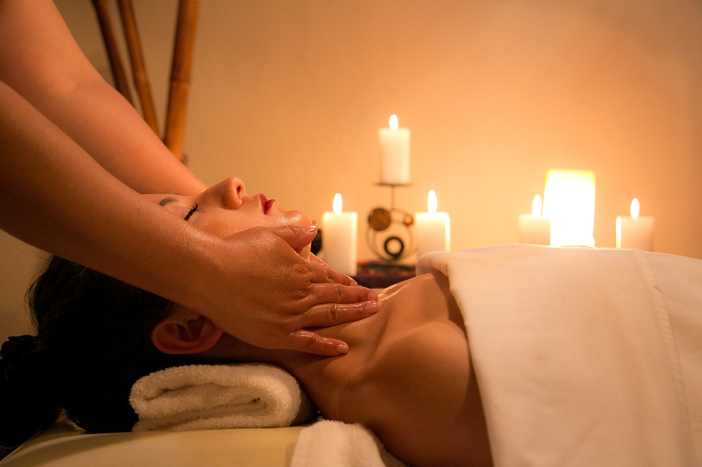

Pesac Resort
Här på det nyetablerade hotellet Pesac Resort kan du
släppa all stress och bara slappna av. Vi kan garantera att du
med hjälp av flera olika spa-avdelningar, tränings- och yogapass,
pooler, varma stränder och mycket mer kommer känna dig som en
ny människa

Pesac Poolside
Lägg dig ner i solstolen eller bada i en av våra
pooler. Vi har många pooler för avslappning, motionssim, lek
och vi har även äventyrsbad som är väldigt populära hos de
yngre. Vill du hellre lägga dig ner på stranden? Inga problem!
Vi har underbara stränder bara en trappa ner från våran
poolside.

Pesac Rooms
På Pesac Resort kan vi skräddarsy ditt rum efter
dina behov. Nygifta? Familj med många barn? Resa med
företaget? Inga problem! Pesac Rooms möbleras helt efter
dina krav.

Pesac Diners
Pröva på mat från runtom hela världen! Vi erbjuder
allt från vanlig svensk husmanskost, italienska pastarätter,
grekiska rätter till orientalisk mat. Vi har femstjärniga kockar
från världen runt.

Pesac Spa & Relax
Trötta axlar och spända muskler? Kom till våra
spa- och relax-avdelningar. Här kan du slappna av med hjälp
av gyttjebad, yoga, naprapater och massageterapeuter som
kan garantera att du hamnar på moln 7.

Pesac Terraces
Behöver du paus från solen eller bara vill sitta
i en lugn miljö och läsa en bok? Sätt dig och slappna av vid
våra terrasser. Vid våra terrasser har du även tillgång till bar
och fik.